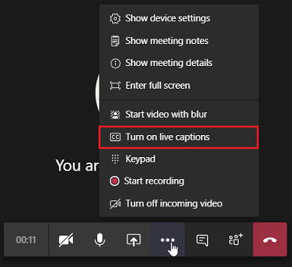
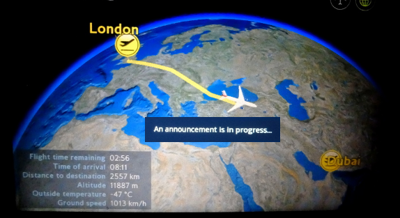
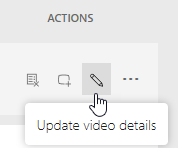
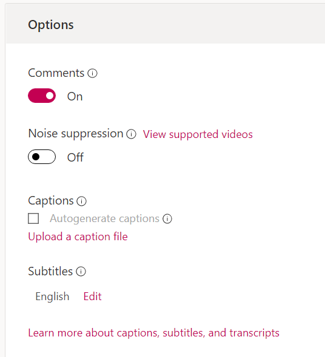
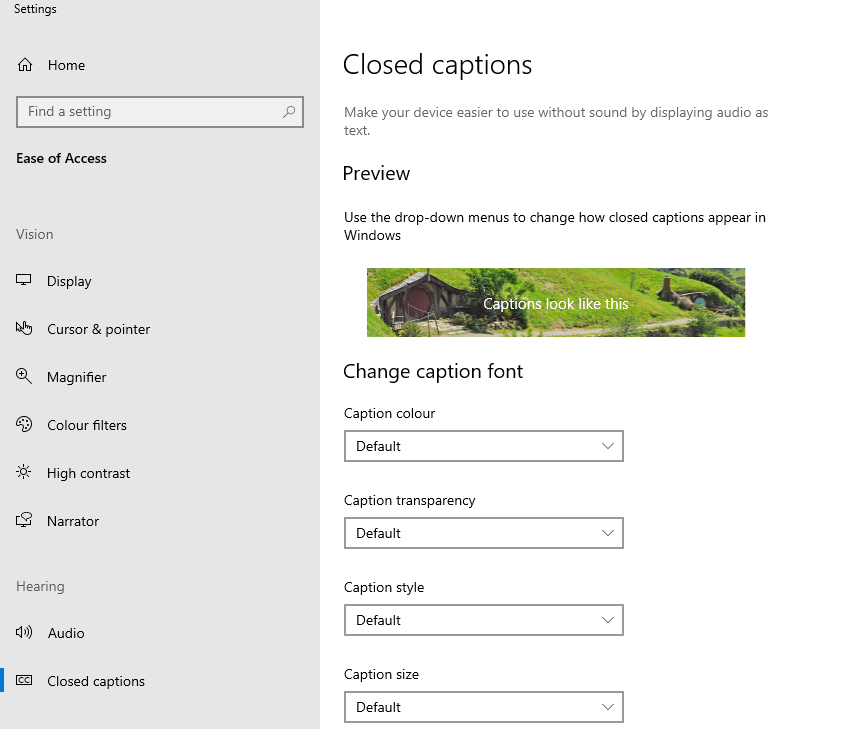
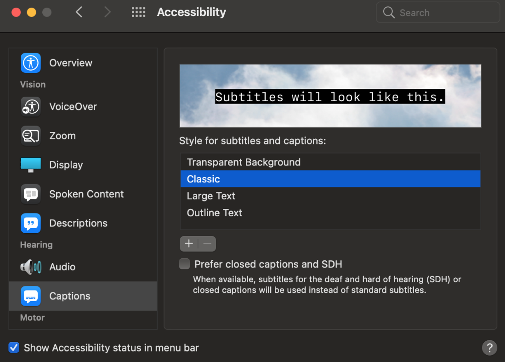

Captions
Overview – Captions
Captions are a text version of the speech and other audio information needed to understand the content. They are synchronized with the audio and usually shown in a media player when users turn them on. Captions benefit users who are deaf, users who are hard of hearing and users who have difficulty processing auditory information. Captions are also used by people without disabilities in a variety of situations:
- In loud environments where users cannot hear the audio.
- In quiet environments where users cannot turn on sounds.
- By users who understand the written language better than the spoken language.
- By users learning to read a new language.
- To better understand content with redundant audio and text, helping users focus and retain information.
- To help locate the document via search. Closed captions are indexed by search engines, making the page more findable.
Captions are usually shown in a media player when users turn them on, called “closed captions”. They can also be “open captions”, which are always displayed and can’t be turned off (or customized).
Captions vs subtitles
The terms “captions” and “subtitles” are used differently in different parts of the world. For our purposes:
- Captions convey spoken dialogue and other audio information needed to understand the content, including sound effects, music, laughter, speaker identification and location. They’re usually in the same language as the spoken audio, but translations can be offered on separate captions tracks.
- Subtitles convey only the spoken dialogue, aimed at hearing people who have difficulty understanding the language of the video. They’re often a translation to a different language.
Subtitles and captions are both implemented with a <track> element (kind="captions" or kind="subtitles") referencing a timed text file (see Using the <track> element, below).
Do you need captions?
For pre-recorded media:
- Video with audio requires captions.
- Video-only content has no audio information needing captions (not applicable).
- Audio-only content does not require captions; it does require a transcript.
For live media broadcasts on the web:
- Video with audio requires captions.
- Audio-only content requires captions or a transcript.
What is included in captions?
For what to include in captions, see the page Transcribing Audio to text.
Live captions
Communication Access Realtime Translation (CART) is the live, word-for-word transcription of speech to text so that individuals can read what is being said in group settings. A professional CART writer transcribes the spoken word into written English or French text using a stenotype machine, laptop and real-time software. The text is then displayed on a secure website, laptop computer or projected onto a large screen.
CART services are typically provided on-site at live training, meetings, events, conventions and conferences.
However, CART services can also be provided remotely for events like web casts.
When CART is provided remotely, the CART writer attends the meeting from an off-site location to listen and transcribe. The text is streamed to a secure website for viewing. Multiple users can simultaneously login to the secure website to display the text on their computers, tablets or mobile devices.
The live captioned text can be saved and edited for use as a captions file for any posted video recordings.
Live automated captions are also available in Microsoft Teams meetings. Teams can detect what is said in a meeting, and present real-time automated captions. To use live captions in a meeting, go to your meeting controls and select the More options button … > Turn on live captions.
See the Automated captions section, below.
Example begins
Example ends
MS Teams screenshot from Iowa Unversity, Closed Captioning in Microsoft Teams.
Bad example: Live announcement without captions
This example illustrates the inconvenience with regards to live announcements and challenges it could lead to for people who have difficulty hearing. This live flight announcement video does not have live captions to give the deaf audience the equivalent information.
Example begins
Example ends
Automatic captions
2021 research into the accuracy of contemporary automated text-to-speech captioning concluded the rate is greater than 90%, with Google and Microsoft producing accuracy rates greater than 95%.
However, even 95% captioning accuracy fails WCAG 2.1 if the "captions" do not include all the dialogue (either verbatim or in essence) as well as all important sounds then the captions are not real captions.
However, automatic captions can be used as a starting point for developing accurate captions and transcripts.
Caption file formats
There are many caption file formats. These three are supported by the WET media player and the MS Stream video player, between them:
- HTML5 data: a custom solution used by the WET media player that combines captions and descriptive transcript in one source. See Good example: Captions using inline HTML, below.
- TTML: supported by the WET media player. See Good example: Captions using TTML, below.
- WebVTT: supported by Microsoft Stream (the only format it supports). WebVTT is also the standard format recommended by the HTML5 specification. See Good example: WebVTT caption file format, below.
You can use this free online subtitle converter to convert different caption file formats.
Basic file formats require only time codes. Advanced file formats provide more control over the styling and positioning of your captions.
Basic file formats
The basic file types have no styling.
|
Format name |
File extension |
More info |
|---|---|---|
|
.srt |
Only basic versions of these files are supported. No style info (markup) is recognized. The file must be in plain UTF-8. |
|
|
.sbv or .sub |
Only basic versions of these files are supported. No style info (markup) is recognized. The file must be in plain UTF-8. |
|
|
MPsub (MPlayer subtitle) |
.mpsub |
"FORMAT=" parameter is supported. |
|
.lrc |
No style info (markup) is recognized |
Advanced file formats
Use these file formats if you want to have more control over the styling (markup) or positioning of your captions.
|
Format name |
File extension |
More info |
|---|---|---|
|
SAMI (Synchronized Accessible Media Interchange) |
.smi or .sami |
Only timecodes, text, and simple markup ( |
|
RealText |
.rt |
Only timecodes, text, and simple markup ( |
|
.vtt |
In initial implementation. Positioning is supported, but styling is limited to |
|
|
TTML (Timed-Text Markup Language) |
.ttml |
In partial implementation. SMPTE-TT extensions supported for CEA-608 features. iTunes Timed Text (iTT) file format is supported; iTT is a subset of TTML, Version 1.0. Styling and positioning aresupported. |
|
DFXP (Distribution Format Exchange Profile) |
.ttml or .dfxp |
These files types are interpreted as TTML files. |
Good example: WebVTT caption file format
Example begins
WEBVTT
00:02.500 --> 00:06.340
<v Eric>Hi, my name is Eric, and I'm a Service Canada employee.
00:06.340 --> 00:08.210
<v Eric>You may have heard the old saying that,
00:08.21 --> 00:10.040
<v Eric>when you're out of work, finding a job is your
00:10.040 --> 00:11.75
<v Eric>full-time occupation.
Example ends
Good example: TTML caption file format
Code begins
<tt xmlns="http://www.w3.org/2006/10/ttaf1" xmlns:tts="http://www.w3.org/2006/10/ttaf1#style" xml:lang="en">
<head>
<styling>
<style id="defaultSpeaker" tts:fontSize="12" tts:fontFamily="Arial" tts:fontWeight="normal" tts:fontStyle="normal" tts:textDecoration="none" tts:color="white" tts:backgroundColor="black" tts:textAlign="center"/>
<style id="defaultCaption" tts:fontSize="12" tts:fontFamily="Arial" tts:fontWeight="normal" tts:fontStyle="normal" tts:textDecoration="none" tts:color="white" tts:backgroundColor="black" tts:textAlign="center"/>
</styling>
</head>
<body style="defaultCaption" id="thebody" xml:id="b1">
<div begin="1.40s" dur="3.33s">
Hi, my name is Eric, and I'm a Service Canada employee.
</div>
<div begin="4.73s" dur="2.73s">
Each and every day, Canadians are improving their job
</div>
<div begin="7.46s" dur="2.14s">
skills or changing their career paths.
</div>
<div begin="9.60s" dur="1.66s">
Are you thinking about taking that step?
</div>
[…]
</body>
</tt>Examples of captions for pre-recorded video with audio
Good example: Captions using inline HTML
The WET Media Player can weave captions and descriptive transcript together inline in the HTML, in the <figcaption> element:
<p>elements holding descriptive transcript take theclass="wet-boew-vd"attribute.<span>elements holding captions take theclass="wd-tmtxt",data-beginanddata-durattributes. JavaScript identifies captions by these attributes and displays the captions dynamically in a<div>element directly below the video.
The WET Media Player is described on the page Media Player Accessibility.
Looking for a Job - HTML5 Transcript/Captions
(Animated pen draws a red line that leads into the text Looking for A Job)
(Cut to a medium shot of the Host. LINE DRAWING GRAPHIC: Stick person appears and waves.)
Hi, my name is Eric, and I'm a Service Canada employee.
You may have heard the old saying that, when you're out of work, finding a job is your full-time occupation.
(LINE DRAWING GRAPHIC: Stick person walks to right side of screen. Screenshot of job bank website appears in animated computer screen.)
Well, there's a lot of truth to that:
finding a job does take time … and effort.
(LINE DRAWING GRAPHIC: Stick person rests head against computer screen in discouragement. But then perks-up.)
But don't get discouraged.
There are a number of online tools and programs available to help you find a job.
(Close-up of the Host.)
No matter what you're looking for there are many Web sites where employers post job notices looking for people to fill vacant positions.
(Job Bank website reappears.)
One of these sites is called Job Bank.
It's updated every day, and lists job opportunities that are available across the country.
(Close-up of the screen. Stick person's profile. Words "Updated Daily" and "48 Hours" appear on screen.)
Since the job ads on Job Bank are updated daily, you should check them regularly.
And, you can search for jobs posted in the last 48 hours.
(Words "Advertise your Skills" and "Email your matches" appear on screen.)
On Job Bank you can also advertise your skills, and even ask them to send you e-mails when jobs that match your search criteria are posted.
(Close-up of the Host. LINE DRAWING GRAPHIC: of the Parliament Building. The web address jobs.gc.ca appears in large letters on the front lawn, stick person points to words.)
If you're thinking about working in the public sector, jobs.gc.ca is the official Web site for Government of Canada listings open to the public.
Keep in mind, that some departments, like the Canada Revenue Agency and Parks Canada, post jobs on their own sites too.
(Medium shot of the Host. LINE DRAWING GRAPHIC: stick person points to Job Bank web page, where words "User ID" and "Password" are highlighted.)
When you apply for jobs, potential employers might ask you to send them your résumé and a covering letter.
Of course, you'll want to make a good first impression on any potential employer.
(The text Résumé Builder appears across stick person's screen.)
Here we can help too!
Check out our online Résumé Builder on the Job Bank Web site.
It can show you how to create a first-class résumé by giving you tips and different layout options.
(Medium shot of the Host. LINE DRAWING GRAPHIC: one stick person talks to another stick person behind a desk labelled Career Counsellor.)
And if you're not sure which jobs you'd like to apply for, check out our Career Navigator tool to explore occupations that you might be interested in.
As well, career counsellors are usually available through your provincial or territorial government to help out.
(Close-up of the Host. LINE DRAWING GRAPHIC: Stick person take a bow. Service Canada logo appears.)
At Service Canada, we're people serving people.
(Dip to black.)
View HTML
Code begins
<figure class="wb-mltmd">
<video poster="demo/video1-en.jpg" title="Looking for a Job">
<source type="video/mp4" src="https://wet-boew.github.io/wet-boew-attachments/videos/video1-en.mp4" />
<track src="#inline-captions" kind="captions" data-type="text/html" srclang="en" label="English" />
</video>
<figcaption>
<details id="inline-captions">
<summary>Looking for a Job - HTML5 Transcript/Captions</summary>
<p class="wet-boew-vd">
<strong>
(Animated pen draws a red line that leads into the text Looking for A Job)
</strong>
</p>
<p class="wet-boew-vd">
<strong>
(Cut to a medium shot of the Host. LINE DRAWING GRAPHIC: Stick person appears and waves.)
</strong>
</p>
<p>
<span class="wb-tmtxt" data-begin="2.50s" data-dur="3.84s">
Hi, my name is Eric, and I'm a Service Canada employee.
</span>
</p>
<p>
<span class="wb-tmtxt" data-begin="6.34s" data-dur="1.87s">
You may have heard the old saying that,
</span>
<span class="wb-tmtxt" data-begin="8.21s" data-dur="1.84s">
when you're out of work, finding a job is your
</span>
<span class="wb-tmtxt" data-begin="10.04s" data-dur="1.70s">
full-time occupation.
</span>
</p>
[…]
</details>
</figcaption>
</figure>Code ends
Good example: Captions using TTML
In addition to inline HTML5 captions, the WET media player supports Timed Text Markup Language (TTML) caption file format (in XML).
Use the <track> element to specify text tracks for <audio> or <video> elements.
Video: Personal Protective Equipment - Higher Risk Exposure
View HTML
Code begins
<video poster="[…]/ppe-high-risk-epi-risque-eleve.jpg" title="Personal Protective Equipment - Higher Risk Exposure">
<source src="[…]/ppe-high-risk-epi-risque-eleve-eng.mp4" type="video/mp4"/>
<track data-type="text/xml" kind="captions" label="English" src="[…]/ppe-high-risk-epi-risque-eleve-eng.xml" srclang="en"/>
</video>Code ends
View TTML
Complete file: ppe-high-risk-epi-risque-eleve-eng.xml
Code begins
<tt xmlns="http://www.w3.org/2006/04/ttaf1" xmlns:tts="http://www.w3.org/2006/04/ttaf1#styling" xml:lang="en">
<head>
<styling>
<style id="defaultSpeaker" tts:fontSize="12px"
tts:fontFamily="SansSerif"
tts:fontWeight="normal"
tts:fontStyle="normal"
tts:textDecoration="none"
tts:color="white"
tts:backgroundColor="black"
tts:textAlign="left"/>
<style id="defaultCaption" tts:fontSize="12px"
tts:fontFamily="SansSerif"
tts:fontWeight="normal"
tts:fontStyle="normal"
tts:textDecoration="none"
tts:color="white"
tts:backgroundColor="black"
tts:textAlign="left"/>
</styling>
</head>
<body id="thebody" style="defaultCaption">
<div begin="00:00:02.76" end="00:00:05.10">
Use of Personal Protective Equipment when Caring for a
</div>
<div begin="00:00:05.10" end="00:00:08.86">
Person Under Investigation for Ebola Virus Disease in
</div>
<div begin="00:00:08.86" end="00:00:12.66">
a First Nations or other Community Health Facility.
</div>
<div begin="00:00:13.60" end="00:00:17.23">
This training video is based on advice from the Public Health
</div>
<div begin="00:00:17.23" end="00:00:20.60">
Agency of Canada's Infection Prevention and
</div>
<div begin="00:00:20.60" end="00:00:22.86">
Control Expert Working Group.
</div>
[…]
</body>
</tt>Code ends
Source: Health Canada video, Personal protective equipment against potential Ebola virus exposure: higher risk
Good example: Captions using YouTube
The YouTube player has built-in accessibility support for users who are deaf or hard of hearing. The majority of videos in the Canada.ca health-related video gallery use YouTube as the source for the video. Captions can be added and edited directly using the YouTube platform.
Use the <iframe> element to specify the source to the YouTube video.
HTML
Code begins
<div class="iframe-container">
<iframe width="560" height="315" src="https://www.youtube.com/embed/kQuDwArlYJM?cc_load_policy=1&hl=en&cc_lang_pref=en" frameborder="0" allow="accelerometer; autoplay; clipboard-write; encrypted-media; gyroscope; picture-in-picture" allowfullscreen></iframe>
</div>Code ends
Using the <track> element
The <track> element lets you specify timed text tracks for an <audio> or <video> element.
HTML
Code begins
<video controls>
<source src="/videos/compliance.mp4" type="video/mp4">
<track
default
kind="captions"
srclang="en"
src="/videos/tracks/compliance.vtt"/>
</video>Code ends
Attributes
- default
- Indicates that the tracks should be enabled, unless the user has indicated in preferences that another track is more appropriate.
- kind
- Indicates how the text track is going to be used. Possible values are:
- subtitles
- Textual translation of content.
- captions
- Textual version of the audio content for users who are deaf.
- descriptions
- Textual description of the visual content for users who are blind.
- chapters
- Used when the user is navigating the media resource.
- metadata
- Tracks used by scripts. Not visible to users.
- label
- Indicates the title of the text track. The title is user readable and listed by the browser with all available text tracks.
- src
- Indicates the address of the timed text file.
- srclang
- Indicates the language of the track text data as a valid BCP 47 language tag, e.g.,
- English: en
- French: fr
Adding captions on YouTube platform
You can add captions to YouTube videos by uploading a caption file:
- Sign into YouTube Studio.
- From the left menu, select Subtitles.
- Click the video that you'd like to edit.
- Click Add Language and select your language.
- Under subtitles, click Add.
- Select Upload file.
- Choose between With timing or Without timing, then select Continue.
- Choose a file to upload.
- Select Save.
Youtube supports numerous subtitle and closed caption file formats including SRT, SBV, SUB, MPSUB, LRC, CAP, SAMT, RT, VTT, TTML and DFXP.
YouTube also allows you to auto-sync transcripts, type captions manually, and automatically create captions using their speech recognition technology.
Adding captions on Microsoft Stream platform
You can add captions to MS Stream videos by uploading a caption file:
- In Stream, find the video you want to edit.
- Click on the pencil icon to Update video details

- In the Options panel, click Upload a caption file. Only the VTT file format is supported.

Presenting and styling captions
Requirements for presenting and styling captions consist mostly of community best practice rather than WCAG Success Criteria or Techniques. Only the 3:1 contrast ratio is required to meet a WCAG Success Criterion.
This is a shortlist of requirements. The Captioning Key website offers more best practice for presenting and styling captions.
- Captions are synchronized with the audio.
- Captions are typed in mixed case letters.
- Captions use no more than three lines at a time.
- Put a new sentence on a new line.
- Maximum number of characters per line is 32 characters.
- Insert caption line breaks at logical points rather than in the middle of a phrase.
- Default colors are white text on a black background.
- Default color contrast ratio between font color and background color is a minimum of 3:1 (font size at least 18 points).
- Default font size is at least 22pt.
- Position captions to not obscure on-screen text, people’s faces and other important visual information.
- Ensure a minimum of 1.5 seconds gap in between captions.
- Remove captions from long silent intervals. Captions have a maximum duration of 6 seconds.
Customizing captions
Users can customize the visual appearance of captions in the operating system. Some media players also support customization.
Good example: Captions styling in Windows
Example begins
Example ends
Good example: Captions styling in MAC
Example begins
Example ends
Related WCAG resources
Related WCAG resources
Success criteria
Techniques
- G93: Providing open (always visible) captions
- G87: Providing closed captions
- H95: Using the track element to provide captions